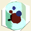

|  | TOAST Demo 6: 3-D image reconstruction |
This demo applies the TOAST image reconstruction solver to a small 3-D problem.
A cylindrical object contains absorbing and a scattering inclusions. Measurements from 40 source and 40 detector positions arranged in 5 rings around the mantle of the cylinder are used for a reconstruction of the 3-D volume images of absorption and scattering.
Select a solver and regularisation method, then click 'Run' to start the reconstruction.
Note that the solver for this 3-D problem can be slow, resulting in sluggish responses from MATLAB.